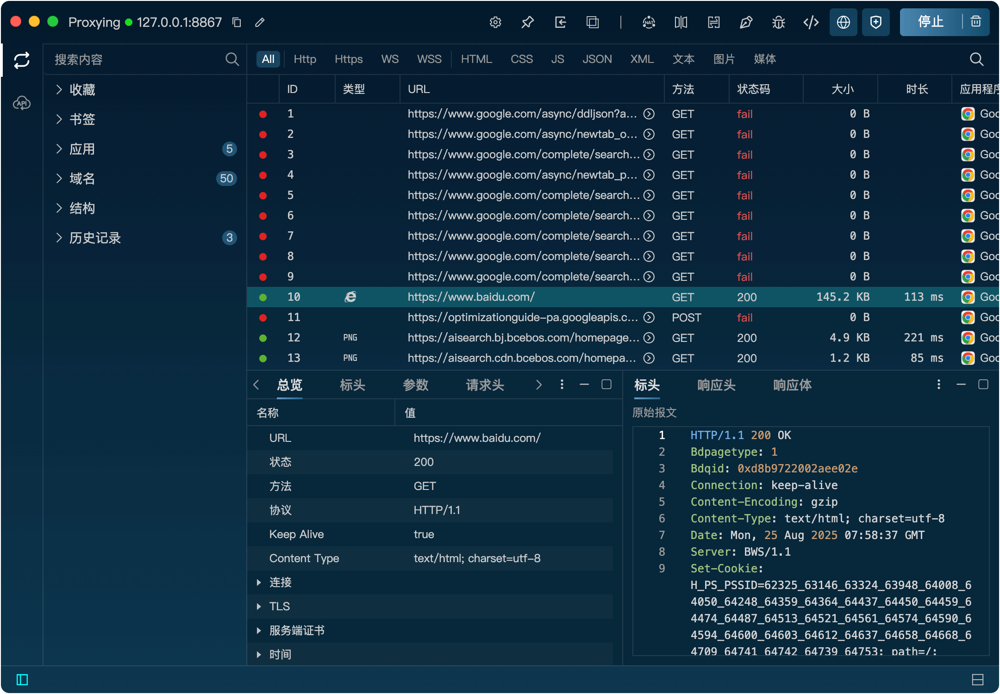
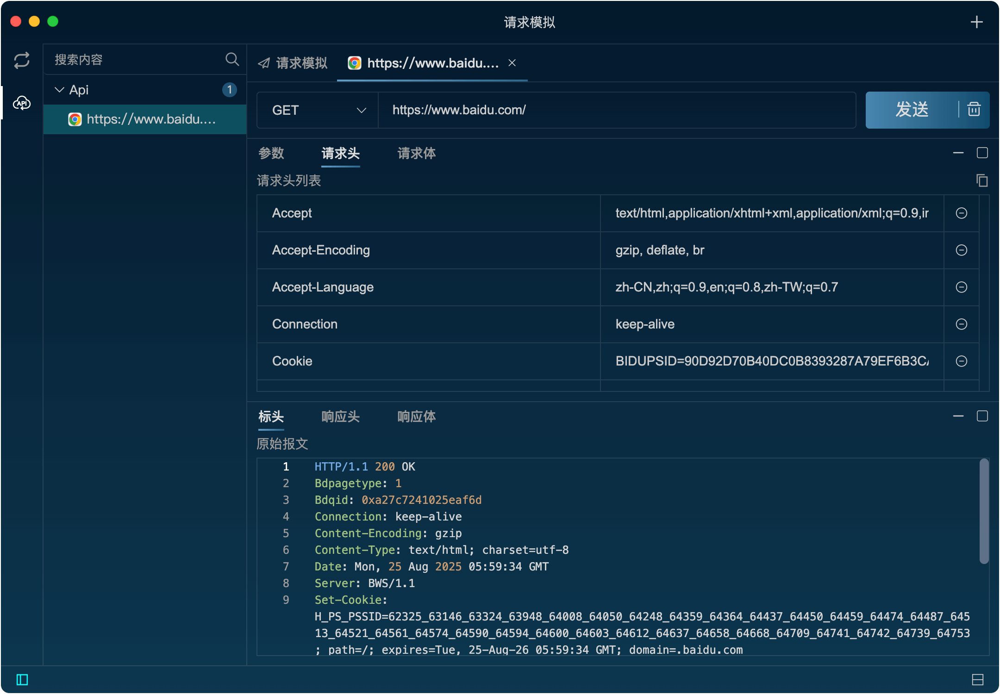
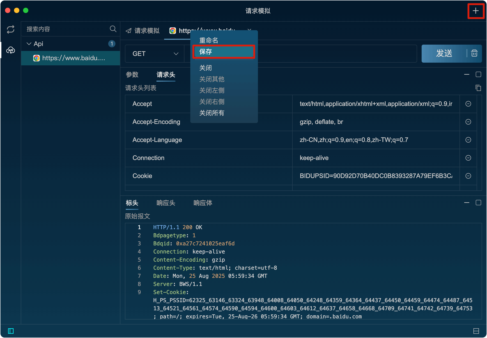

简单使用
开始抓包
1、设置系统的代理服务器为Listen。
2、点击右上角开始按钮，开启代理功能。
3、打开浏览器开始浏览网页，Listen即可捕获到HTTP/HTTPS请求。
4、双击请求，可以查看请求的详细信息。

5、右键请求，可以对请求进行各种操作。
构造请求
1、切换到请求模拟界面，手动输入请求信息或者右键已有的请求，选择“编辑 & 发送”，然后修改请求信息。
2、点击右上角的“发送”按钮，发送请求。 
4、点击右上角的“+”按钮，可以新增模拟请求tab页。
5、在Tab导航栏上右键，可以对Tab页进行各种操作。可以对请求就行保存，保存好的请求可以在左侧集合区中查看并重新编辑和发送。 